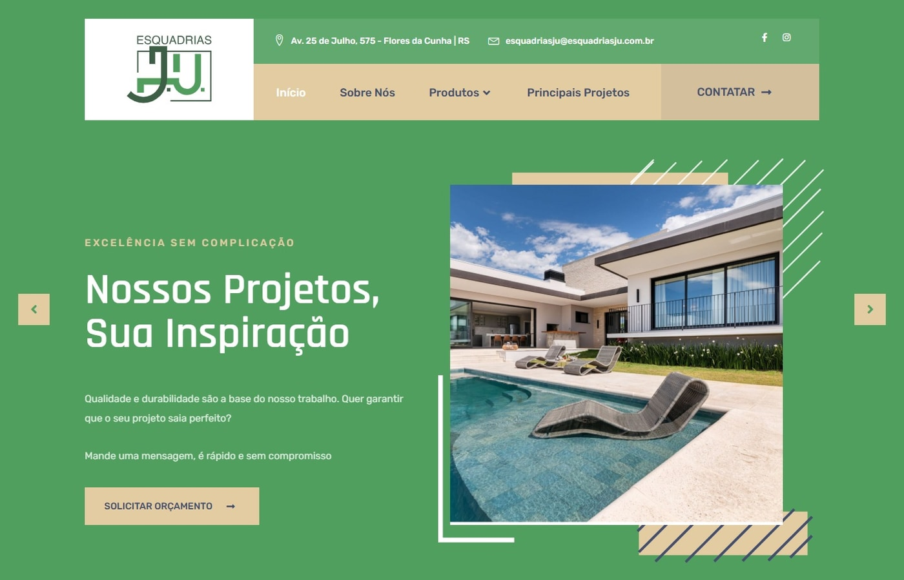
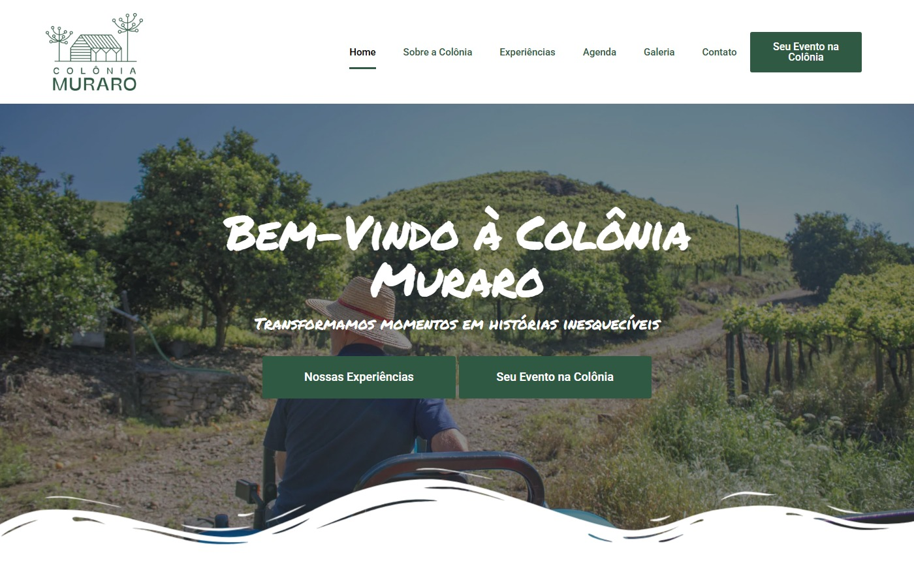
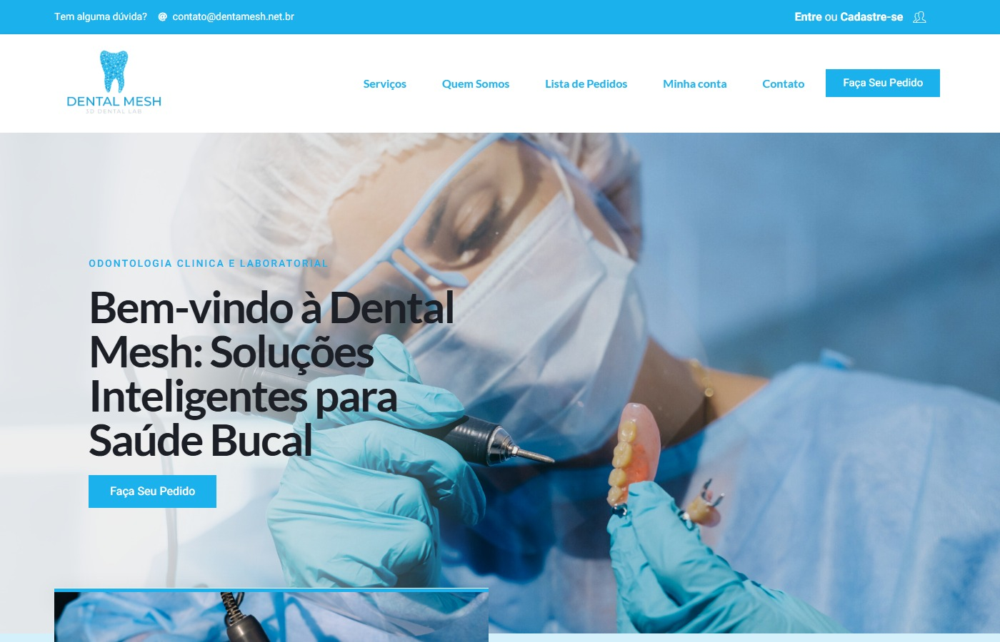
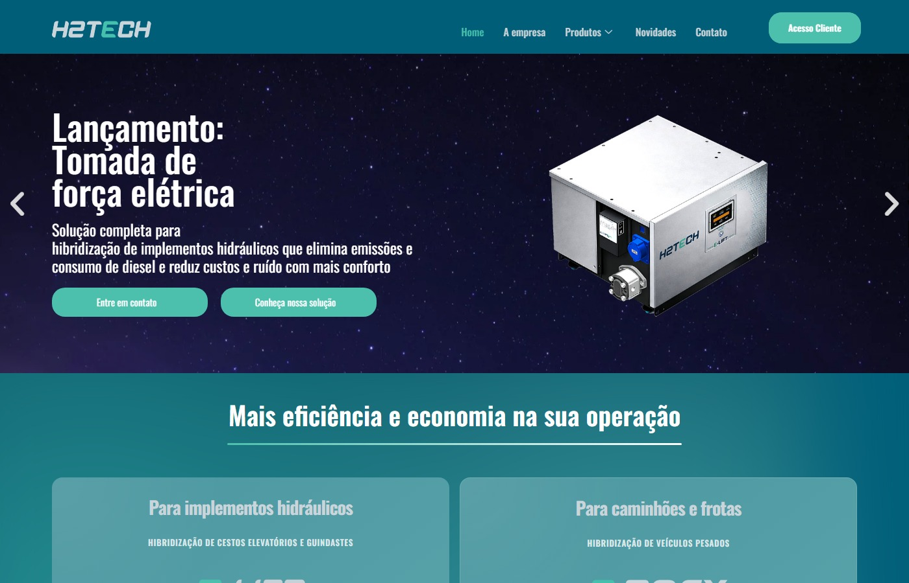
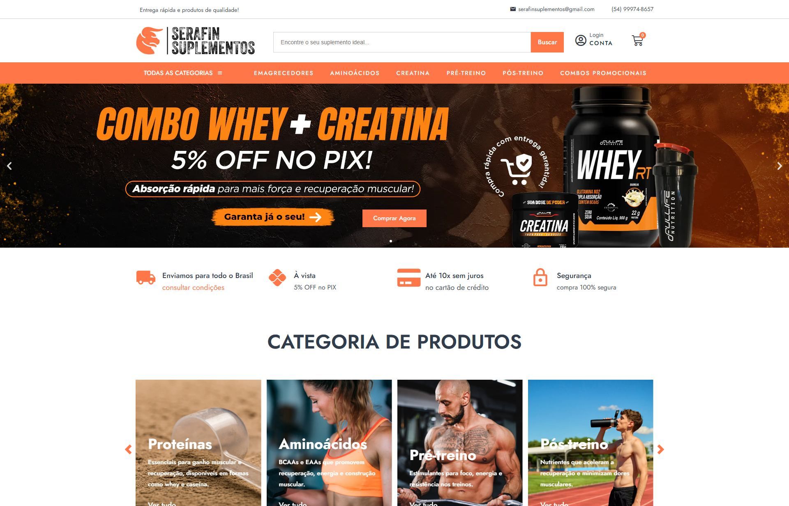
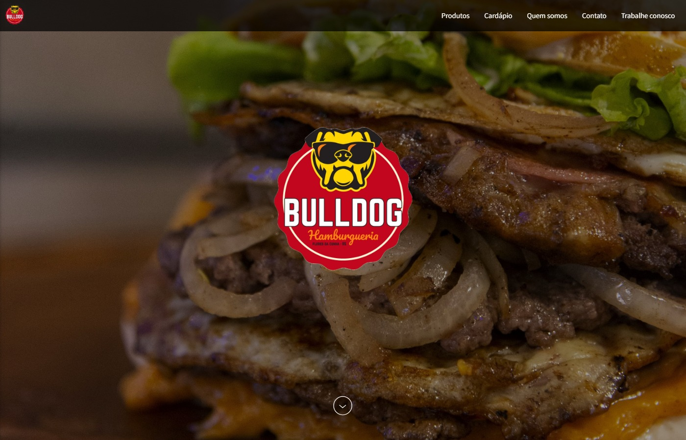
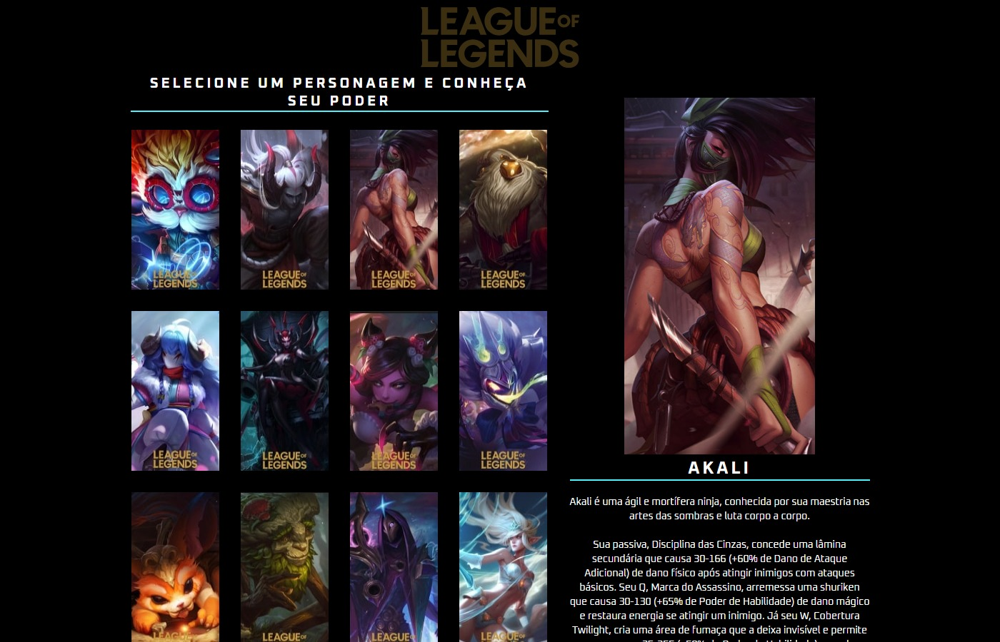
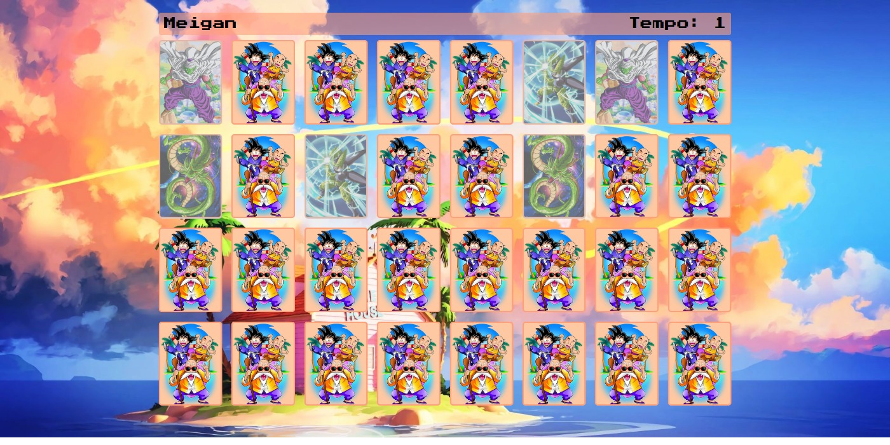

01
Dra. Jussara Ulian
Site publicado para apresentar Odontopediatria, Ortodontia, Invisalign, tecnologia iTero e agendamento em Flores da Cunha.
Ver projetoUma seleção que representa minha evolução como desenvolvedor, explorando diferentes desafios, tecnologias e soluções.
Site publicado para apresentar Odontopediatria, Ortodontia, Invisalign, tecnologia iTero e agendamento em Flores da Cunha.
Ver projeto
Site publicado para apresentar esquadrias em madeira, PVC, decks, pergolados, galeria de projetos e pedido de orçamento.
Ver projeto
Site publicado para apresentar atuação tributária e societária, equipe, reconhecimentos e contato em Criciúma.
Ver projeto
Loja virtual publicada para apresentar produtos artesanais personalizados, categorias de presentes, vitrine de lançamentos, curadoria visual e atendimento.
Ver projeto
Site publicado para apresentar natureza, gastronomia, experiências, agenda de eventos, galeria, visitação e contato.
Ver projeto
Site publicado para apresentar soluções odontológicas, serviços laboratoriais, pedidos, orçamentos e contato.
Ver projeto
Site publicado para apresentar soluções inteligentes de hibridização, produtos industriais, novidades e contato comercial.
Ver projeto
Site publicado para apresentar neurologia humanizada, especialidades, abordagem de atendimento, artigos e contato em Criciúma.
Ver projeto
Loja virtual publicada na Tray para apresentar peças automotivas, instrumentos de medição, banners de produto, categoria técnica e atendimento.
Ver projeto
Loja virtual publicada para apresentar suplementos, categorias de produto, vitrines de mais vendidos, lançamentos, ofertas, marcas, avaliações e atendimento nacional.
Ver projeto
Site estático criado para apresentar a hamburgueria, identidade visual, produtos mais pedidos, cardápio, história, contato e demonstração navegável.
Ver projeto
Interface interativa em JavaScript para selecionar campeões, trocar imagem principal, nome e descrição por hover, com grid responsivo e visual gamer.
Ver projeto
Jogo da memória em JavaScript com login, nome do jogador, cronômetro, cartas embaralhadas, pares revelados e tabuleiro responsivo.
Ver projetoEsta página organiza o portfólio em uma lista completa, com acesso direto aos cases individuais, tecnologias usadas, links publicados e contexto de cada entrega.